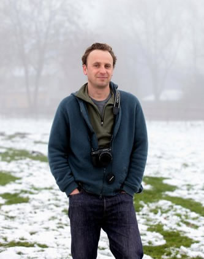
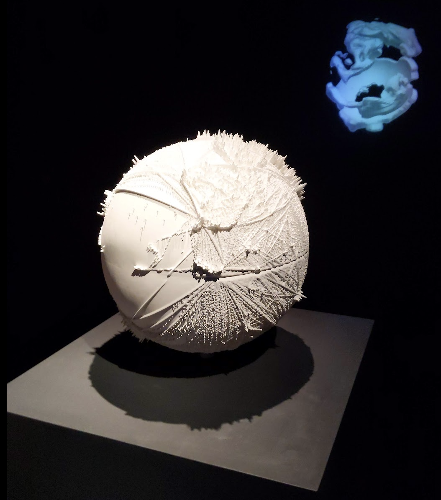
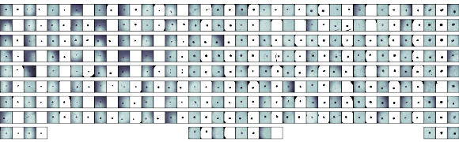
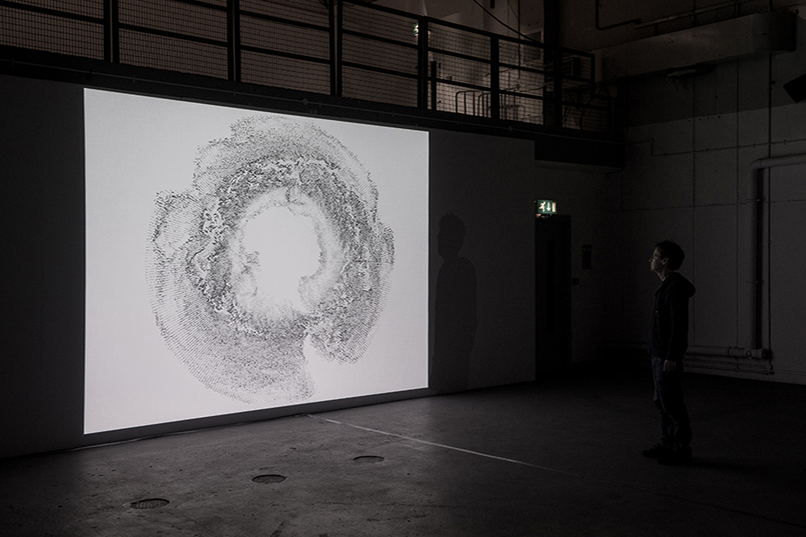
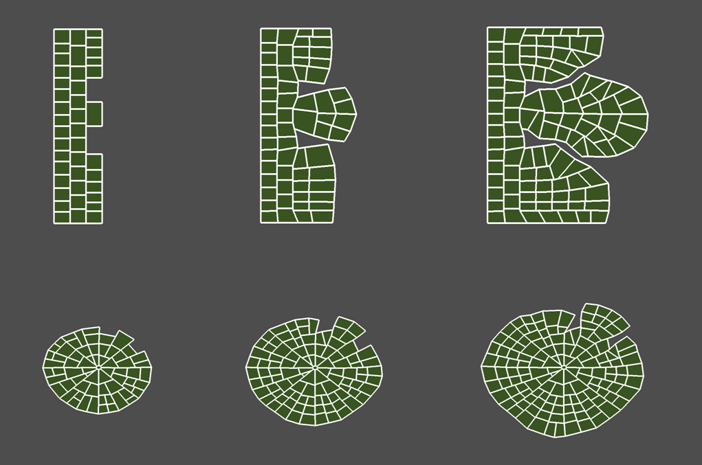
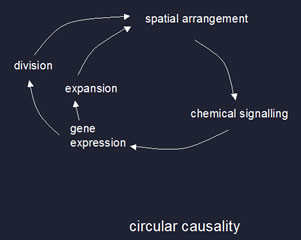
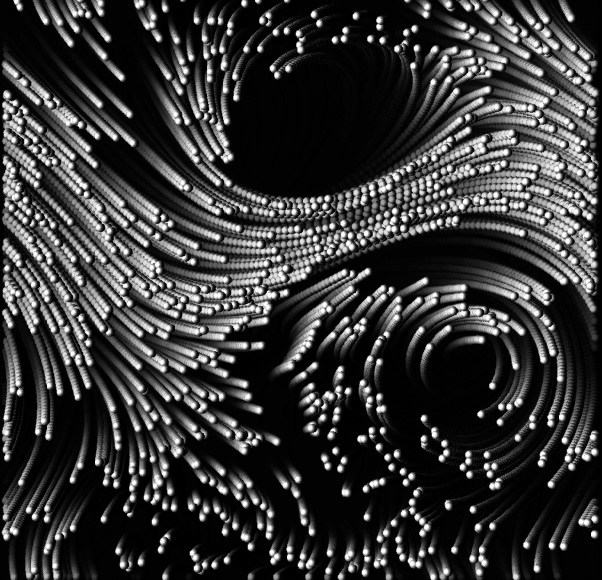
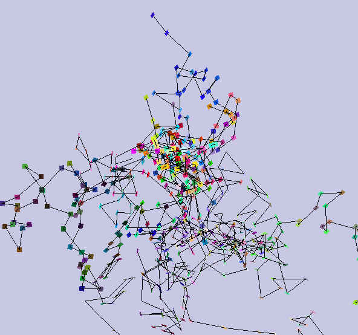
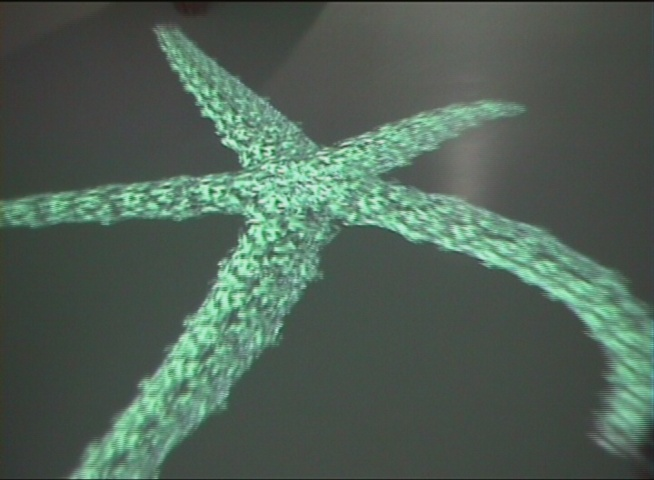

I have worked for over 30 years as both an artist and scientist on a wide range of research projects using computers to model, visualise and create with complex systems.
I am particularly interested in the role of form in autopoietic, or self-making, systems and how it is created, maintained and evolves both materially and culturally.
Publications Exhibitions contact@jonathanmackenzie.net
An interdisciplinary research project exploring climate data and the carbon system through 3D printed objects in collaboration with the British Antarctic Survey.
The project sought to explore the affective and critical possibilities of climate data manifested in material form.
www.atmospheric-collective.org
Working with the Martinez-Arias lab to analyse microscope imagery with AI image processing techniques to help build models of emergent cellular behaviour in early embryo development. Modified cells carrying fluorescent markers are used to display genetic states as the cells make decisions according to chemical signals and local context. Videos of the cells are then segmented and tracked using a bespoke Python AI software pipeline.

The Southern Ocean Studies is part of a series of projects produced with assistance from our partners the British Antarctic Survey, which aims to explore how Climate Models can function as expressive visual and conceptual representations of climate change beyond their original scientific contexts and purpose, i.e. as art media with expressive, conceptual and critical potential. In doing so it presents a possible model of practice for a digital and networked art that seeks to reflect upon the intersections between culture and the technological and cognitive infrastructure of the science of climate change.
With Gavin Baily and Tom Corby.

Developing software models of plant morphogenesis using self-organising cellular systems integrating spatial, mechanical, chemical and genetic properties. The work shows how plant form emerges within the feedback of processes across multiple related domains.


A collaboration with artist Mark Palmer and the Cambridge Fluid Dynamics Laboratory to develop interactive models of turbulent systems.

With Gavin Baily
An art science collaboration which focuses on self-organising systems as models for how personal experience of culture interfaces with culture itself as a process of mutual feedback. We built software to scrape images from a personal computer and the internet while structuring a 3D model of the process sorting and growing over time.
See Mesh

Artificial Life installation illustrating creature-like behaviour exhibited by simulated neural networks and physics. Made with Richard Brown and Gavin Baily

The project explored how ideas from complex systems theory such as the edge of chaos and autopoiesis might relate to organic forms. The edge of chaos identifies a region of dynamic systems that is between being ordered and repetitive, and disordered and random. Autopoiesis is a description of living and cultural systems revealing the networks of mutual, self-making relationships that constitute such systems.
I wrote software where dynamic forms emerged when networks of relationships were fine-tuned to be between order and chaos.
This work investigates the possibility of applying nonlinear dynamical systems theory to the problem of modelling sound with a computer. The particular interest is in the creative use of sound, where its representation, generation and manipulation are important issues. A specific application, for example, is the modelling of environmental sound for film sound-tracks.
Recently, there have been a number of major advances in the field of nonlinear dynamical systems which include chaos theory and fractal geometry. It is argued that these provide a rich source of ideas and techniques relevant to the issues of modelling sound. One such idea is that complex behaviour may be generated from simple systems. Such behaviour can often replicate a wide range of natural phenomena, or is of interest in its own right because of its aesthetic appeal. This has been demonstrated often through computer generated images and so an equivalent is sought in the audio domain. This work is believed to be the first substantial attempt at this.
I turned some of the resulting models into commercially available software.